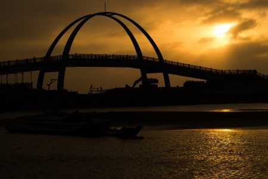
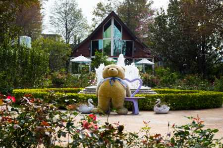
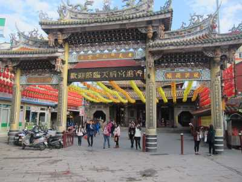
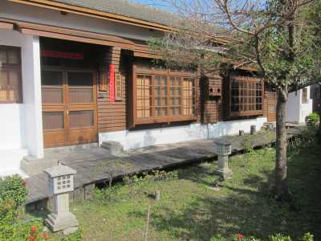
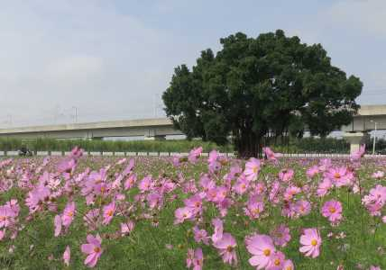
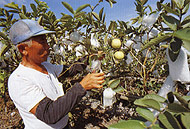
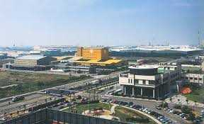
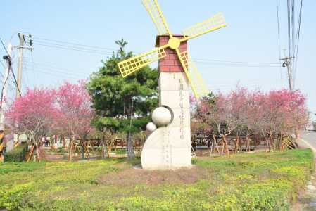

關於彰化
INTRODUCE
彰化古稱半線，為台灣開拓較早之地區。清朝時，鹿港迅速發展成為中部地區最具發展潛力的城鎮，時人並以"一府、二鹿、三艋岬"譽之。
彰化境內足以吸引遊人目光的，便是八卦山脈清新靜謐的幽林山景、綠野平疇的田野風光、西濱海岸線的迷人景致與生態資源、豐富多彩的人文歷史以及多樣化農作物，都展現出小品旅遊的另一種迷人風采。
彰化更是個小吃原鄉，來到這裡當然不能錯過美食，各鄉鎮知名的美食如彰化肉圓、北斗肉圓、溪湖羊肉爐、員林蜜餞、鹿港蚵仔煎、傳統糕餅、王功的蚵仔炸、田尾花草餐、二水火燒麵…等，無不令人吮指回味，想一嚐再嚐。
私房彰化
SECRET
王功漁火碼頭

田尾鄉公路花園

鹿港天后宮

桂花巷

溪州公園

彰化小故事
HISTORY

彰化演變史

彰化過去主要以農業為主，也是中部米倉之一，芭樂與巨峰葡萄都是本縣重要栽培農業，花卉種植面積更佔了全台灣近二分之一。

1993年成立彰化濱海工業區，是台灣目前最大的工業區與填海工程，使彰化從農業漸漸轉為工業產業，包括食品、玻璃、紡織、塑膠、化學等。

近年行政院發展中部科學園區，選定彰化二林鎮為中科四期，有機會使原本佈滿甘蔗園的鄉鎮及將變身為光電產業基地。而農業產業並未停擺已從臺灣穀倉、農業大縣，轉為符合現代人的農園休閒旅遊需求，將其原有的農園發展成觀光果園等。


聯絡我們
CONTACT


※頁面上些許照片取自google，如有版權問題歡迎隨時聯絡，必定盡力配合，感謝。
© Copyright c-week.elebymax.net 2016